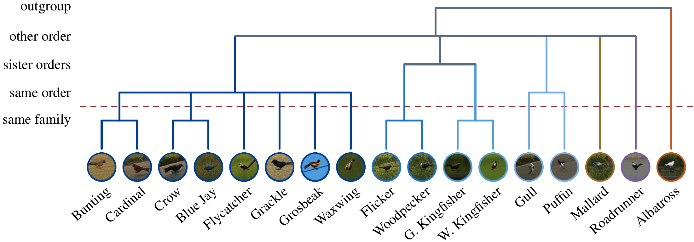
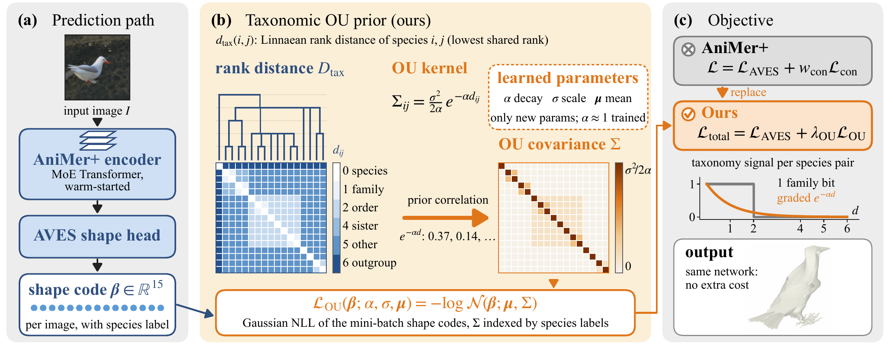
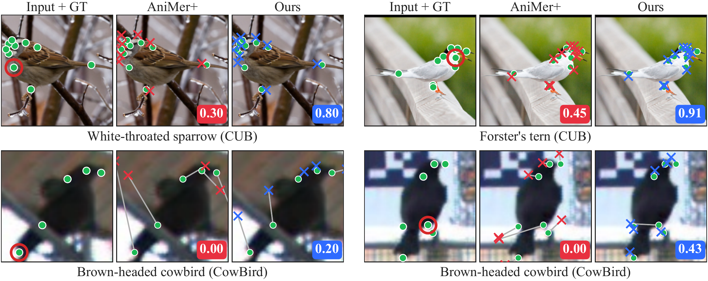
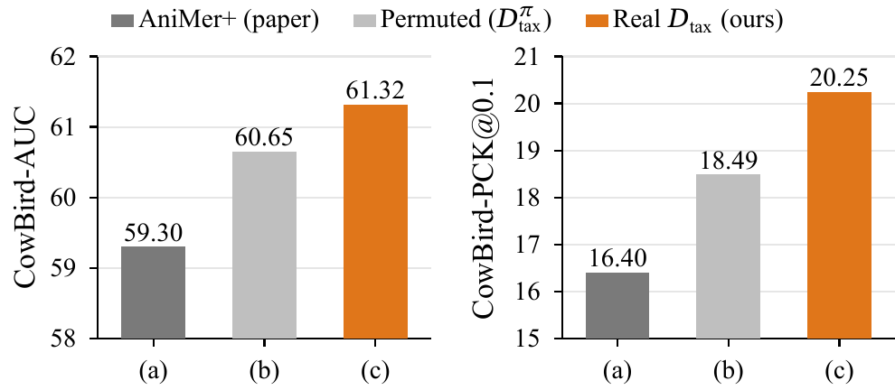

Beyond Family Labels: A Taxonomic Ornstein–Uhlenbeck Prior for Avian 3D Shape Recovery
Abstract
Recovering 3D pose and shape of birds from single images is bottlenecked by the long tail of avian diversity: out of ~10,000 species, only a few dozen have 3D-labeled training data, and in-the-wild test sets routinely contain species never seen at training. Generalizing across clades is therefore a central problem. The current state of the art, AniMer+, mitigates it with a family-level contrastive loss that conveys only a binary same-family indicator per pair and discards the continuous structure of the species tree.
We propose a taxonomic Ornstein–Uhlenbeck prior on the shape code of the AVES parametric bird mesh model: a multivariate Gaussian whose covariance decays exponentially with Linnaean rank distance, with a learnable selection strength and noise scale. The prior generalizes family contrastive into a continuous, generative form, exposing the graded cross- and within-family similarity that a binary indicator cannot, and brings continuous comparative phylogenetics in as a biology-grounded inductive bias for the long tail.
Our method improves over AniMer+ on both metrics of the unseen-species CowBird benchmark and on CtrlAVES3D, while remaining comparable on seen-species CUB. A permutation ablation isolates taxonomic structure from generic Gaussian smoothing, and a rank-granularity ablation identifies cross-order distinctions (the structure beyond a family-vs-not indicator) as the dominant source of the unseen-species gain.
Overview

Beyond family labels. The 17 training species of CtrlAVES3D on the Linnaean tree, colored by order. The height at which two lineages join marks their lowest shared rank, from same family up to outgroup; each rank sets the distance dtax that our prior reads. The family-supervised contrastive loss of AniMer+ keeps a single bit of this tree: whether a pair joins below the dashed red line. Our Ornstein–Uhlenbeck (OU) prior uses every rank, pulling the shape codes of two species together more strongly the more closely they are related, so the shape space carries graded structure rather than a same-family indicator.
Method

Method at a glance. (a) The AniMer+ encoder produces AVES shape codes β from a single image. (b) Across species, β is regularized by an OU prior parameterized by learnable (α, σ, μ) over a fixed Linnaean rank distance matrix; the NLL of this Gaussian is LOU. (c) LOU replaces the family-level contrastive term of AniMer+ (wcon = 0), so that on birds Ltotal = LAVES + λOU LOU. Blue: the existing network and fixed taxonomy. Orange: what we add.
Results

Qualitative comparison on two CUB test images (top) and two CowBird test instances (bottom). For each species, the first panel shows the input with the ground-truth keypoints (green dots) and a red circle on the baseline's worst keypoint; the retrained AniMer+ baseline (red crosses) and the OU fine-tune (blue crosses) follow, and gray lines join each prediction to its ground-truth keypoint. The badge is the per-image PCK@0.1.

Real vs. permuted taxonomy ablation. CowBird AUC and PCK@0.1 under three configurations: (a) the AniMer+ baseline, (b) the OU prior with a label-permuted distance matrix, and (c) the OU prior with the real Linnaean distance matrix (both OU runs at λOU = 10−4, constant learning rate).
BibTeX
@inproceedings{jeon2026beyond,
title = {Beyond Family Labels: A Taxonomic Ornstein--Uhlenbeck Prior for Avian 3D Shape Recovery},
author = {Jeon, Yunchan and Kim, SooGon and Kim, Seungwook and Lee, CheolWon and Lee, Jongmin},
booktitle = {Advances in Neural Information Processing Systems (NeurIPS)},
year = {2026}
}